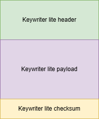
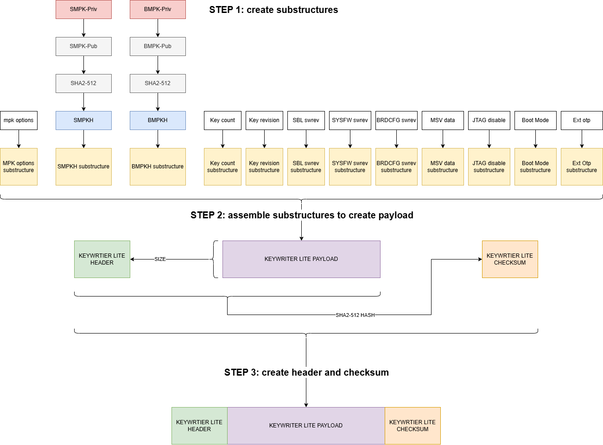

Key Writer (Lite)¶
This guide describes the procedure to be followed to populate customer keys in eFuses of the SoC.
Note
This document must be read along side OTP Keywriter (Lite) TISCI Description
High Security (HS) Device Sub-types¶
HS-FS (High Security - Field Securable): Device type before customer keys are programmed (the state in which the device leaves TI factory). In this state, device protects the ROM code, TI keys and certain security peripherals. HS-FS devices do not enforce secure boot process.
- M3/M4 JTAG port is closed, A53 JTAG port is open
- DMSC/SMS/SMS-lite Firewalls are closed, SOC Firewalls are open
- Board configuration need not be signed
- ROM Boot expects a combined boot image that contains TI signed system-firmware binary. The outer certificate can be created using any private key.
- System Firmware binary is encrypted by the TI Encryption key (TI MEK), and signed by the TI Private key (TI MPK).
HS-SE (High Security – Security Enforced without customer encryption keys): Device type after only the customer public key hashes are programmed. HS-SE devices enforce secure boot (without encryption).
- M3/M4, A53 JTAG ports are both closed
- DMSC/SMS/SMS-lite, SOC Firewalls are both closed
- Board configuration needs to be signed with active customer private key (SMPK/BMPK)
- ROM Boot expects a combined boot image that contains TI signed system-firmware binary. The outer certificate must be created using the active customer private key (SMPK/BMPK). The boot image must not be encrypted because HS-SE (converted using keywriter lite) devices don’t have any stored customer encryption key.
- System Firmware binary is encrypted by the TI Encryption key (TI MEK), and signed by the TI Private key (TI MPK).
HS-FS to HS-SE Conversion¶
In order to convert a HS-FS device to HS-SE device, one has to program the customer root key (optionally backup key) on the target device, using OTP Keywriter Lite.
Customer key information is put in a structured format to create a binary blob. A list of fields that OTP keywriter Lite supports, can be found here.
{kind=link}
Certain efuse bits have been allocated to store the type of keywriter (either keywriter or keywriter lite) on devices.
When keywriter lite is utilized, it checks these bits to verify that they are either empty or contain the state corresponding to keywriter lite. If any other value is detected, keywriter lite becomes inoperable.
Upon the initial execution of keywriter lite on a device, the keywriter lite state is programmed into the efuse bits, effectively binding the device to the keywriter lite type. This ensures that the device is permanently associated with keywriter lite, preventing any other keywriter type from being used.
Introduction¶
The keywriter lite service is used for programming fields that service different purposes. Following is a list of supported fields:
| Field | Description | Notes |
|---|---|---|
| SMPKH | Secondary Manufacturer Public Key Hash | SMPK is 4096-bit customer RSA signing key |
| BMPKH | Backup Manufacturer Public Key Hash | BMPK is 4096-bit customer RSA signing key |
| MPK Options | SMPK/BMPK options | (Reserved for future use) 10 bit value (split into 2 parts) |
| KEYCNT | Key count | 2 if BMPK, SMPK are used, 1 if SMPK is used, 0 if none |
| KEYREV | Key revision | Can have a maximum value = key count |
| MSV | Model specific value | 20 bit value with 12 bit BCH code |
| SWREV-BOARDCONFIG | Secure Board Configuration software revision | 64 bit value |
| SWREV-SBL | SBL software revision | 48 bit value |
| SWREV-SYSFW | Firmware software revision | 48 bit value |
| JTAG DISABLE | JTAG unlock disable | 4 bit value |
| EFUSE BOOT MODE | efuse boot modes | 25 bit value |
| EXTENDED OTP | Extended OTP array | 1024 bit extended otp array |
Programming Modes¶
The keywriter (lite) service functions in different programming modes each identified by a unique number known as the command id. Each mode is dedicated for programming a specific field or a set of fields. The programming modes offer the flexibility to selectively program just one field or a group of fields or all fields at once. The structure of binary data blob depends on the programming mode. The various programming modes supported by keywriter lite are listed below:
| Programming Mode | Command ID | Purpose |
|---|---|---|
| Oneshot mode | 0 | Program all supported fields at once. |
| Multishot mode | 1 | Program a subset of supported fields at once. |
| SMPKH mode | 2 | Program just SMPKH. |
| BMPKH mode | 3 | Program just BMPKH. |
| Key count mode | 4 | Program just key count. |
| key revision mode | 5 | Program just key revision. |
| SBL SWREV mode | 6 | Program just SBL swrev. |
| SYSFW SWREV mode | 7 | Program just SYSFW swrev. |
| BRDCFG SWREV mode | 8 | Program just BRDCFG swrev. |
| MSV mode | 9 | Program just MSV. |
| JTAG mode | 10 | Program just JTAG unlock disable. |
| Boot mode mode | 11 | Program just efuse boot modes. |
| Extended OTP mode | 12 | Program just extended otp. |
The programming mode must be selected based on the use case. For example, if someone wants to program just SMPKH, ‘SMPKH mode’ must be use; if someone wants to program SMPKH, key-count and key-revision at once (minimum programming needed for device conversion), ‘mutli-shot mode’ must be used.
Keywriter Lite blob¶
Field data is provided to keywriter lite service through a structured binary blob. The structure of the blob depends on the selected programming mode. The general structure of the blob is shown below:

Structure of header¶
The structure of header is given below:
struct keywriter_lite_header { uint16_t magic; uint16_t size; uint8_t abi_major; uint8_t abi_minor; uint16_t reserved0; uint32_t cmd_id; uint32_t reserved1[2]; } __attribute__((packed));
- magic: A magic number with value 0x9012
- size: size of the payload section in bytes
- abi_major: abi major version number - 0x0
- abi_minor: abi minor version number - 0x1
- reserved0: reserved for future use, set to zero
- cmd_id: command id for the programming mode to be used
- reserved1: reserved for future use, set to zero
Payload substructures¶
The payload is made up of field specific substructures. For single-shot and multi-shot programming modes, the blob must have all the substructures packed in a specific order (more on this below.) For the remaining modes, the blob must have just the corresponding substructure.
MPK Options substructure:
struct mpk_opts { uint32_t field_header; uint32_t action_flags; uint16_t options; uint8_t resv_field[2]; uint32_t reserved[2]; } __attribute__((packed));
- field_header: The lower 16-bits contain a magic number with value 0x4A7E
- action_flags: Collection of flags to control the programming
- options: Reserved for future use, set to zero
- resv_field: Reserved for future use, set to zero
- reserved: Reserved for future use, set to zero
SMPKH/BMPKH substructure:
struct mpkh { uint32_t field_header; uint32_t action_flags; uint8_t mpkh[64]; uint32_t reserved[2]; } __attribute__((packed));
- field_header: The lower 16-bits contain a magic number with value 0x1234/0x9FFC (SMPKH/BMPKH)
- action_flags: Collection of flags to control the programming
- mpkh: MPKH value
- reserved: Reserved for future use - set to zero.
Key Count substructure:
struct key_cnt { uint32_t field_header; uint32_t action_flags; uint32_t count; uint32_t reserved[2]; } __attribute__((packed));
- field_header: The lower 16-bits contain a magic number with value 0x5678
- action_flags: Collection of flags to control the programming
- count: The key count value encoded in bit-position format.
- reserved: Reserved for future use - set to zero.
Key Revision substructure:
struct key_cnt { uint32_t field_header; uint32_t action_flags; uint32_t revision; uint32_t reserved[2]; } __attribute__((packed));
- field_header: The lower 16-bits contain a magic number with value 0x62C8
- action_flags: Collection of flags to control the programming
- revision: The key revision value encoded in bit-position format.
- reserved: Reserved for future use - set to zero.
SBL SWREV substructure:
struct sbl_revision { uint32_t field_header; uint32_t action_flags; uint64_t revision; uint32_t reserved[3]; } __attribute__((packed));
- field_header: The lower 16-bits contain a magic number with value 0x8BAD
- action_flags: Collection of flags to control the programming
- revision: The SBL software revision value encoded in bit-position format.
- reserved: Reserved for future use - set to zero.
SYSFW SWREV substructure:
struct sysfw_revision { uint32_t field_header; uint32_t action_flags; uint64_t revision; uint32_t reserved[3]; } __attribute__((packed));
- field_header: The lower 16-bits contain a magic number with value 0x8BAD
- action_flags: Collection of flags to control the programming
- revision: The SYSFW software revision value encoded in bit-position format.
- reserved: Reserved for future use - set to zero.
BRDCFG SWREV substructure:
struct brdcfg_revision { uint32_t field_header; uint32_t action_flags; uint64_t revision; uint32_t reserved[3]; } __attribute__((packed));
- field_header: The lower 16-bits contain a magic number with value 0x45A9
- action_flags: Collection of flags to control the programming
- revision: The BRDCFG software revision value encoded in bit-position format.
- reserved: Reserved for future use - set to zero.
MSV substructure:
struct msv { uint32_t field_header; uint32_t action_flags; uint32_t msv; uint32_t reserved[2]; } __attribute__((packed));
- field_header: The lower 16-bits contain a magic number with value 0x98DC
- action_flags: Collection of flags to control the programming
- msv: The 20-bit MSV value.
- reserved: Reserved for future use - set to zero.
JTAG Disable substructure:
struct jtag_disable { uint32_t field_header; uint32_t action_flags; uint32_t jtag; uint32_t reserved[2]; } __attribute__((packed));
- field_header: The lower 16-bits contain a magic number with value 0x7421
- action_flags: Collection of flags to control the programming
- jtag: The 4-bit jtag unlock disable value.
- reserved: Reserved for future use - set to zero.
Boot Mode substructure:
struct boot_mode { uint32_t field_header; uint32_t action_flags; uint32_t fuse_id; uint32_t boot_mode; uint32_t reserved[2]; } __attribute__((packed));
- field_header: The lower 16-bits contain a magic number with value 0xA1B2
- action_flags: Collection of flags to control the programming
- fuse_id: The index of the fuse to program currently accepts only 1,2.
- boot_mode: The 25-bit boot mode value to program.
- reserved: Reserved for future use - set to zero.
Ext OTP substructure:
struct ext_otp { uint32_t field_header; uint32_t action_flags; uint16_t size; uint16_t index; uint8_t wprp[16]; uint8_t otp[128]; uint32_t reserved[4]; } __attribute__((packed));
- field_header: The lower 16-bits contain a magic number with value 0xD0E5
- action_flags: Collection of flags to control the programming
- size: The number of bits to program.
- index: The index in the 1024-bits space to start programming from.
- wprp: Read protect/write protect array.
- otp: The 1024 bits extended otp data.
- reserved: Reserved for future use - set to zero.
Structure of payload¶
For single-shot or multi-shot programming mode the payload contains all the substructures. For other programming modes the payload contains just the corresponding substructure.
Payload structure for single-shot/multi-shot mode:
struct keywriter_lite_payload { struct mpk_opts mpkOptions; struct mpkh smpkh; struct mpkh bmpkh; struct key_cnt keyCount; struct key_rev keyRevision; struct sbl_revision sblRev; struct sysfw_revision sysfwRev; struct brdcfg_revision brdcfgRev; struct msv msvVal; struct jtag_disable jtagDisable; struct boot_mode bootMode; struct ext_otp extOtp; } __attribute__((unused));
While using single-shot programming mode, all fields must be enabled. While using mutli-shot programming mode, only the fields that need to be programmed must be enabled.
Payload structure for smpkh mode:
struct keywriter_lite_payload { struct mpk_opts mpkOptions; struct mpkh smpkh; } __attribute__((unused));
Payload structure for bmpkh mode:
struct keywriter_lite_payload { struct mpk_opts mpkOptions; struct mpkh bmpkh; } __attribute__((unused));
Payload structure for key count mode:
struct keywriter_lite_payload { struct key_cnt keyCount; } __attribute__((unused));
Payload structure for key revision mode:
struct keywriter_lite_payload { struct key_rev keyRevision; } __attribute__((unused));
Payload structure for sbl revision mode:
struct keywriter_lite_payload { struct sbl_revision sblRev; } __attribute__((unused));
Payload structure for boardcfg revision mode:
struct keywriter_lite_payload { struct brdcfg_revision brdcfgRev; } __attribute__((unused));
Payload structure for msv mode:
struct keywriter_lite_payload { struct msv msvVal; } __attribute__((unused));
Payload structure for jtag unlock disable mode:
struct keywriter_lite_payload { struct jtag_disable jtagDisable; } __attribute__((unused));
Payload structure for ‘boot mode’ mode:
struct keywriter_lite_payload { struct boot_mode bootMode; } __attribute__((unused));
Payload structure for extended otp mode:
struct keywriter_lite_payload { struct ext_otp extOtp; } __attribute__((unused));
Structure of Checksum¶
struct checksum { uint8_t hash[64]; } __attribute__((packed));
- hash: SHA2-512 hash of the keywriter-lite header and keywriter-lite payload sections combined.
Procedure¶
The following figure illustrates the procedure to be followed to generate the binary blob for key writing.

FAQs¶
What happens when one or more unsupported fields are marked as enabled in a single-shot/multi-shot blob?
The unsupported fields are ignored by TIFS. In case of single-shot mode, if any of supported fields are disabled, the request would be NACKed. In case of mutli-shot mode, if none of the supported fields are enabled, the request would be NACKed.